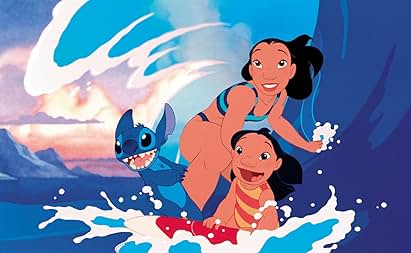
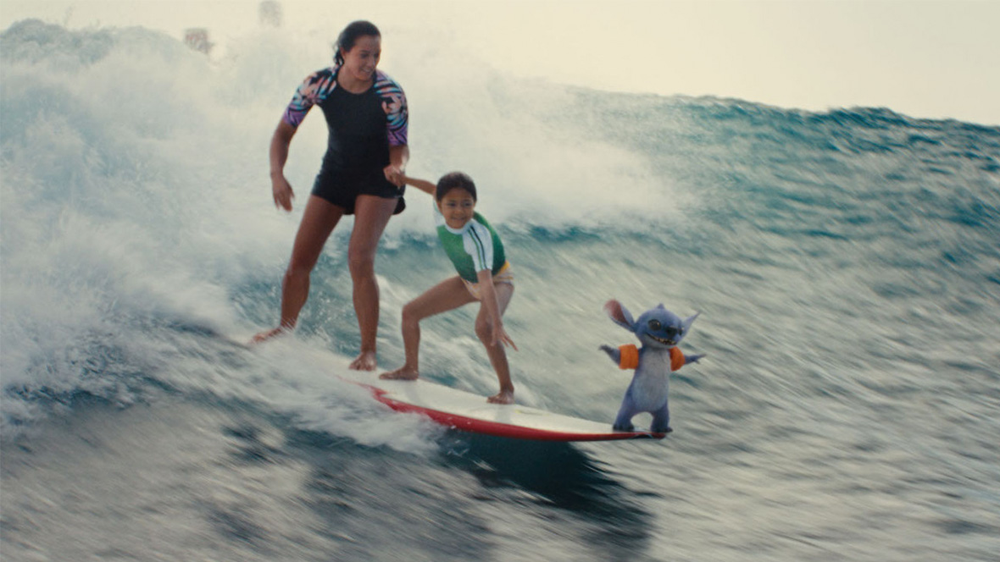

Personajes
- Stitch
- Lilo
- Nani
- Cobra Bubbles
- Jumba
La pelicula tiene dos versiones
Una estrenada en 2002 y otra estrenada en el año 2025
Lilo es una niña hawaiana solitaria que adopta a un perro que en realidad es un extraterrestre travieso que se esconde de unos cazadores intergalácticos.
Lilo y stitch 2002
 Pagina de IMDB "lilo y stitch 2002"Lilo & Stitch" es una película animada de ciencia ficción y comedia dramática producida por Walt Disney Feature Animation.
La película fue dirigida por Chris Sanders y Dean DeBlois y se estrenó en 2002.
Información técnica:
Lilo y stitch 2025
 Pagina de IMDB "lilo y stitch 2025La película de acción real de "Lilo & Stitch" se estreno en Argentina el 22 de mayo de 2025
Es una remake de la película animada de 2002.
La dirección está a cargo de Dean Fleischer Camp, y cuenta con Maia Kealoha como Lilo y Chris Sanders retomando su papel como la voz de Stitch.